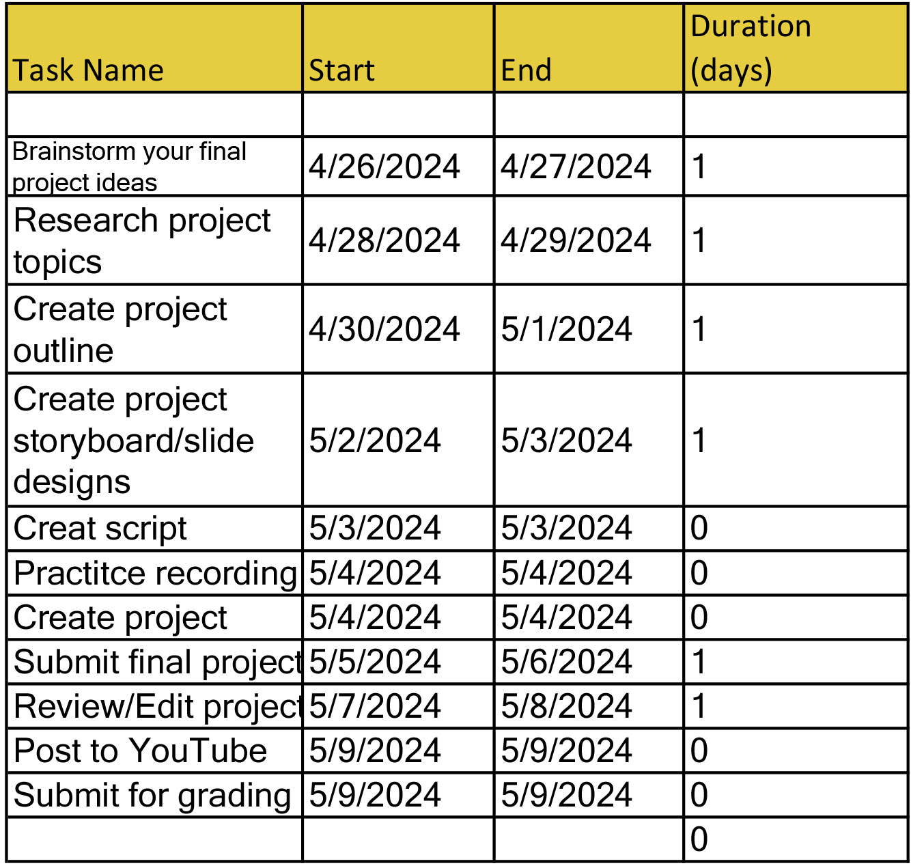

Assignment 15 - Summary
Session 15 - Final Project Purpose
GANTT Chart

For this weeks session, we had to fully plan out how we are going to prepare our final project. I enjoyed learning how to use the GNATT Chart method to better organize
myself for the project. I believe it is a wonderful idea to plan it out this way because then we are more aware of what needs to be done on which day we choose to
complete that portion of the final project. It gives you a better sense of relief when you are able to plan it out this way, and helped me plan out how I want to do my
final project!